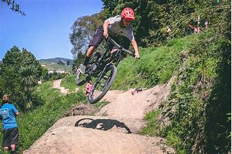
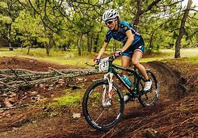
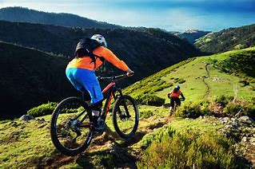

El ciclismo de montaña, considerado un deporte de riesgo, es un ciclismo de competición realizado en circuitos naturales generalmente a través de bosques por caminos angostos con cuestas empinadas y descensos muy rápidos. Las bicicletas suelen ser fabricadas de aluminio, titanio, carbono u otras aleaciones lo más ligeras posibles, llevan suspensión delantera que está en la horquilla, con recorrido desde 100 a 210mm, que puede ser de resorte, aceite, aire o ambos sistemas combinados; algunas usan también suspensión para la rueda trasera, normalmente con un sistema de articulación en el cuadro de la bicicleta. La suspensión trasera puede estar, raramente, integrada en el cuadro. A finales de la primera década del siglo XXI, la mayoría usaba cambios de 9 velocidades en el piñón (casete) de la rueda posterior y 3 platos en la catalina.

Posteriormente, en el mercado se comenzaron a comercializar bicicletas con biplato adelante y juegos de casete, de 10 y 11 velocidades en el eje trasero; en el 2015 se incursionó en el mercado con la catalina monoplato con casetes de 11 y 12 velocidades, y, hacia finales de la segunda década del siglo XXI, se creó un nuevo tipo con 13 velocidades, poco común entre los ciclistas. Estas configuraciones siempre son a elección del deportista, el avance de la tecnología permitió alojar más relaciones en el casete para simplificar la Catalina y hacer más sencillo el manejo de las relaciones llevándolos a un solo actuador en el manubrio a diferencia de los sistemas tradicionales con relaciones en el casete y también en la catalina que requieren de dos actuadores o sistemas electromecánicos automatizados más complejos y costosos.
El freno viene accionado a través de una palanca situada en el manubrio. Hasta finales del siglo XX solo se habían visto frenos de llanta, con pastillas de goma o caucho, accionadas por un cable de acero o cabo. Bas Peters en descenso durante el Campeonato Nacional de los Países Bajos Zoetermeer 2008. A partir del siglo XXI se comenzó a utilizar los frenos de disco, los cuales están formados por un disco de diámetro reducido fijado al eje de la rueda que se accionado igualmente por manivelas y cables de acero o posteriormente con sistemas hidráulicos. Los frenos de disco son mucho más seguros aunque no más ligeros. Para el ciclismo de montaña, se suelen utilizar frenos de disco, al ser más resistentes al agua y al barro. Es altamente recomendado el uso de elementos de seguridad como casco especial, guantes de dedos largos, gafas, pedales clip y zapatillas especiales para este tipo de pedal. Protectores de torso, codos y rodillas. Algunas de las especialidades y competiciones están reguladas por la UCI (Unión Ciclista Internacional) mientras otras se disputan de modo amistoso.
Dentro del mountain bike de competición, se distinguen las siguientes especialidades principales (algunas catalogadas por la UCI como profesionales). Campo traviesa o rally Artículo principal: Cross country El campo a través o rally (Cross country, XC) en bicicleta de montaña son competiciones por terreno ascendente y descendente. Suelen disputarse en circuitos de 10-100 km de longitud y en algunos casos se efectúan varias vueltas. Todos los corredores parten al mismo tiempo. Aquí las pulsaciones medias suelen ser entre 170-180 ppm. Suele ser la especialidad competitiva más habitual del ciclismo de montaña, de hecho en el nombre de estas competiciones se suele omitir la especialidad concreta y usando el genérico de "ciclismo de montaña" se sobreentiende que se refiere a esta especialidad. La especialidad olímpica, con distancias y normas olímpicas, lleva el código XCO (Cross-country Olympic). Campo a través por equipos Es una carrera en el que compiten varios corredores de un equipo dándose relevos una vez llegados a meta (código XCR) . Campo a través de eliminación Es una disciplina que consiste en una serie de carreras cortas con cuatro participantes, en la que los dos primeros avanzan de ronda y los otros dos quedan eliminados (código XCE). Se parece al four-cross, excepto que el trazado no es de descenso.

El descenso (Downhill, código DH) es una especialidad proveniente del campo a través para 4 (Four cross). Recorrido cuesta abajo con saltos y obstáculos tanto naturales como artificiales de dificultad técnica media o alta en el que los corredores luchan contra el cronómetro de manera individual, efectuándose el remonte por medios mecánicos (telesillas o camiones). En descenso se han registrado varios tipos de récords de velocidad en bicicleta. En esta modalidad del ciclismo, no hay ningún tipo de cuesta arriba en el que haya que pedalear, generalmente. Las bicicletas llevan suspensiones delantera con 200 o 203 mm y traseras desde 200 mm a 267 mm de recorrido, esto permite una mejor absorción de impactos a la hora de enfrentarse a un objeto natural o artificial como lo son los saltos, así como frenos de disco de 203 mm también, lo que permite una mayor eficacia de frenado. Las cubiertas de las ruedas son más gruesas (normalmente de 2,35 a 2.5 pulgadas) para asegurar el máximo agarre, y el manillar más ancho (entre 760 y 810 mm) para un mayor control de la bicicleta. Además de esto, la mayoría son en aleaciones de titanio, carbono y aluminio. Las protecciones que se usan en este tipo de eventos son el casco integral, guantes, rodilleras y espinilleras, peto (traje que incluye protector de columna, pecho y costillas, hombreras, coderas y muñequeras) protector cervical y unas gafas parecidas a las de esquí y motocross. Durante los últimos años se celebran, cada vez con más participantes y seguidores, carreras de descenso urbano; es decir, descenso por un circuito preparado previamente por la ciudad. Entre lo más famosos se encuentran el de Valparaíso Cerro Abajo (Chile). Otras Con el tiempo han surgido estas otras especialidades alternativas en la que solo algunas competiciones de Maratón de montaña y de Campo a través para 4 son considerados por la UCI como profesionales que entraron progresivamente en los Campeonatos Mundiales desde 2000. La mayoría son de exhibición, diversión y aventura. Ascenso (Uphill) Especialidad en la cual se compite contra reloj y distancia. El trazado solo es de subida, y gana quien haga el menor tiempo o la mayor distancia en el ascenso. Avalancha (Megavalanche o Downhill Maratón) Se trata de una competición de descenso generalmente de más de 10 km. Se suelen emplear bicicletas de doble suspensión; sin embargo estas son más ligeras, debido a la importancia que cobra el pedaleo. Se diferencian de las de descenso porque todos los participantes salen al mismo tiempo como en una estampida. En España se lleva haciendo la avalancha «Big Ride Manzaneda».1 Se trata de un circuito que alcanza los 1000 metros de desnivel con una longitud de entre 15 y 18 km que atraviesa pistas forestales, caminos de cantos rodados, riachuelos... haciendo de esta una prueba avalancha de enduro.
